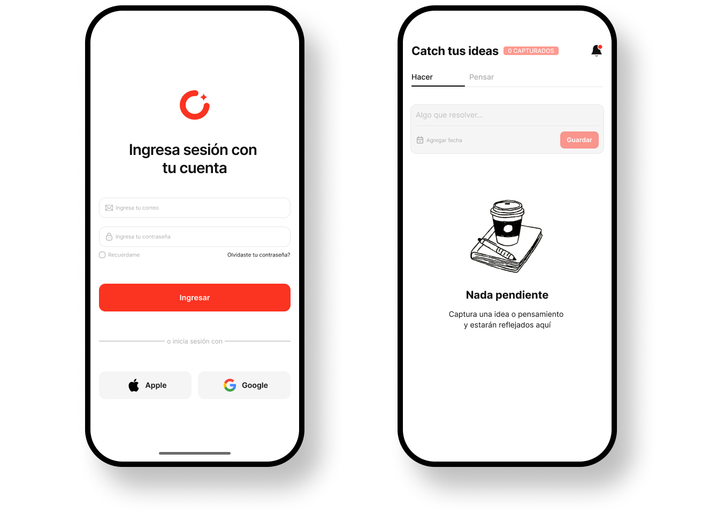

Sistema Visual & UI/UX
Un sistema chico, pero completo
Antes de diseñar pantallas armé la base. Es un producto de una persona, así que el sistema tenía que ser lo suficientemente pequeño para mantenerlo solo, y lo suficientemente estricto para que las decisiones no se repitieran cada vez.

